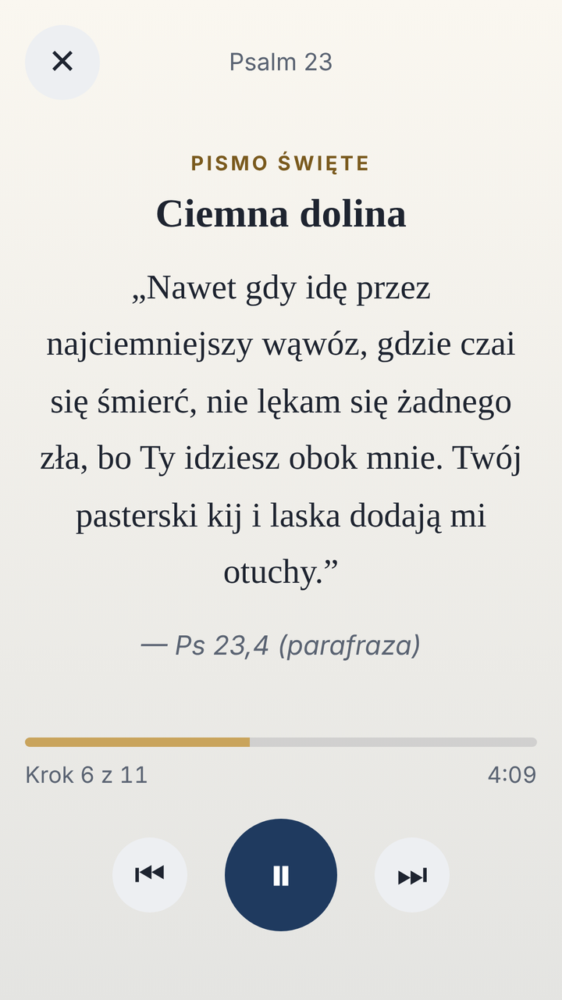
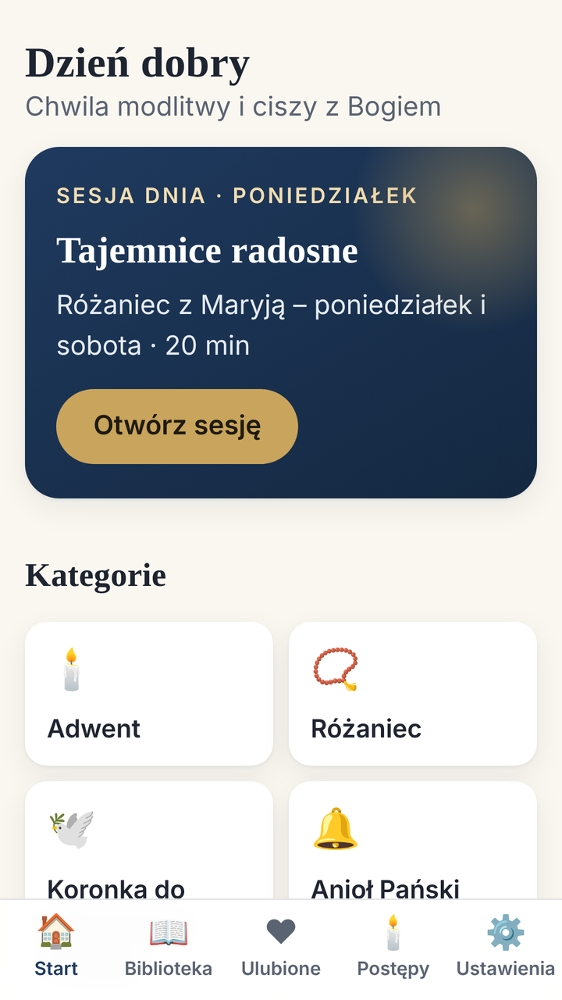
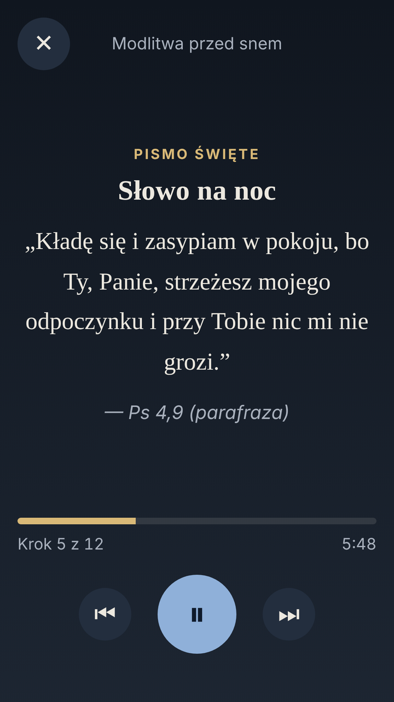

🕯️ Adwent 2026: cała aplikacja za darmo do 24 grudnia
Chwila modlitwy i ciszy z Bogiem — każdego dnia
Appolonia prowadzi cię krok po kroku przez różaniec, Koronkę, psalmy i chwile ciszy. Spokojnie, po polsku, bez rozpraszaczy — także bez internetu.
- bez konta
- bez reklam
- działa offline
- darmowa wersja na zawsze

Adwent z Appolonią — w Adwencie cała aplikacja za darmo
Do 24 grudnia 2026 wszystkie sesje, także premium, są bezpłatne — bez konta, bez karty, bez żadnych zobowiązań. Od 29 listopada do Wigilii każdego dnia czeka też krótka modlitwa na czas oczekiwania na Boże Narodzenie.
Modlitwy, które znasz — w spokojnej formie
Tradycyjne modlitwy Kościoła i chrześcijańska medytacja, podane krok po kroku. Wybierasz, ile masz czasu: od 5 do 20 minut.
Różaniec
Tajemnice radosne, światła, bolesne i chwalebne — z rozważaniem każdej tajemnicy.
Koronka do Miłosierdzia Bożego
Modlitwa ufności przekazana przez św. Faustynę.
Anioł Pański
Krótka chwila z Maryją w środku dnia.
Rachunek sumienia
Spokojne podsumowanie dnia i przygotowanie do spowiedzi.
Lectio divina
Modlitewne czytanie Słowa Bożego: czytam, rozważam, odpowiadam.
Psalmy
Psalm 23, 91, 121, 139 — powoli, wers po wersie.
Modlitwa wieczorna
Wyciszenie przed snem i oddanie dnia Bogu.
Cisza
Modlitwa kontemplacyjna: Modlitwa Jezusowa i trwanie w obecności Boga.
Trzy kroki do chwili ciszy
Bez zakładania konta, bez logowania. Po prostu zaczynasz.
Otwórz Appolonię
W przeglądarce telefonu. Jeśli chcesz, dodaj ją do ekranu głównego — będzie działać jak zwykła aplikacja.
Wybierz modlitwę
Sesja dnia czeka na ekranie głównym (np. tajemnice różańca na dany dzień tygodnia) albo wybierz coś z biblioteki.
Módl się w swoim tempie
Tekst pojawia się krok po kroku, z zegarem i delikatnym dzwonkiem. Możesz zatrzymać, cofnąć albo przejść dalej.
Prosta, spokojna, czytelna
Duży tekst, stonowane kolory i tryb ciemny na wieczorną modlitwę.


Modlitwa to sprawa między tobą a Bogiem
Dlatego Appolonia niczego o tobie nie zbiera i nie walczy o twoją uwagę.
Bez konta
Nie podajesz e-maila ani hasła. Otwierasz i od razu się modlisz.
Bez reklam i śledzenia
Żadnych reklam, żadnej analityki działającej po cichu.
Działa offline
Po pierwszym otwarciu modlisz się także w samolocie, w górach czy w kościele bez zasięgu.
Dane tylko na twoim telefonie
Ulubione, postępy i ustawienia zostają na urządzeniu. W każdej chwili możesz je wyeksportować lub usunąć.
Teksty, którym możesz zaufać
Teksty Pisma Świętego w formie własnych parafraz, wiernych sensowi oryginału — zawsze oznaczone. Tradycyjne modlitwy Kościoła.
Uczciwa cena
Hojna wersja darmowa, a jeśli wolisz nie mieć subskrypcji — jedna płatność na zawsze.
Zacznij za darmo. Rozwijaj się, kiedy chcesz.
Różaniec, Koronka i Anioł Pański są darmowe — zawsze. Premium otwiera całą bibliotekę.
W Adwencie cała aplikacja jest za darmo, a płatne plany zaczną obowiązywać od 25 grudnia 2026. Do tego czasu niczego nie kupujesz.
Darmowy
- Różaniec — wszystkie 4 części
- Koronka do Miłosierdzia Bożego
- Anioł Pański i rachunek sumienia
- Wybrane psalmy, lectio divina i cisza
- Adwent z Appolonią
Miesięczny
- Pełna biblioteka sesji
- Nowe modlitwy, gdy się pojawią
- Anulujesz w każdej chwili
Roczny
ok. 7,42 zł miesięcznie, pierwsze 7 dni za darmo
- Pełna biblioteka sesji
- Nowe modlitwy, gdy się pojawią
- 7 dni na spokojne wypróbowanie
Na zawsze
jednorazowo, bez subskrypcji
- Pełna biblioteka bez limitu czasu
- Płacisz raz i masz spokój
- Bez odnawiania i przypomnień
Do 24 grudnia 2026 (23:59 czasu polskiego) wszystkie sesje są bezpłatne i nie trzeba niczego kupować; promocja nie zamienia się sama w płatną subskrypcję. Ceny planów płatnych zawierają VAT. Jeśli anulujesz okres próbny przed jego końcem, nic nie zapłacisz. Subskrypcja odnawia się automatycznie do czasu anulowania. Szczegóły, w tym prawo odstąpienia od umowy, znajdziesz w regulaminie.
Najczęstsze pytania
Czy Appolonia jest katolicka?
Tak. Appolonia opiera się na tradycyjnych modlitwach Kościoła katolickiego: różańcu, Koronce do Miłosierdzia Bożego, Aniele Pańskim, rachunku sumienia i lectio divina. Fragmenty biblijne to nasze własne parafrazy, wierne sensowi oryginału i zawsze oznaczone.
Appolonia pomaga w codziennej modlitwie, ale nie zastępuje Mszy Świętej, sakramentów ani kierownictwa duchowego.
Czy potrzebuję internetu?
Tylko przy pierwszym otwarciu. Potem Appolonia zapisuje się w pamięci telefonu i działa całkowicie offline — wszystkie modlitwy, dzwonki i zegar.
Jak anulować subskrypcję?
W każdej chwili, bez podawania powodu. Link do zarządzania subskrypcją znajdziesz w e-mailu z potwierdzeniem zakupu. Po anulowaniu zachowujesz dostęp do końca opłaconego okresu, a potem wracasz do wersji darmowej — twoje postępy i ulubione zostają.
Plan „Na zawsze” to jednorazowa płatność — nie ma czego anulować.
Co dzieje się z moimi danymi?
Nic nie opuszcza twojego telefonu. Nie zakładasz konta, nie wysyłamy twoich ulubionych, postępów ani ustawień na żaden serwer i nie używamy reklam ani śledzenia. W ustawieniach aplikacji możesz wyeksportować swoje dane albo usunąć je jednym przyciskiem. Więcej w polityce prywatności.
Czy działa na iPhonie i na Androidzie?
Tak. Appolonia działa w przeglądarce na każdym nowoczesnym telefonie — iPhonie (Safari) i Androidzie (Chrome) — a także na tablecie i komputerze. Nie musisz niczego pobierać ze sklepu.
Jak zainstalować Appolonię na telefonie?
Android (Chrome)
- Otwórz Appolonię w Chrome.
- Stuknij menu ⋮ w prawym górnym rogu.
- Wybierz „Zainstaluj aplikację” lub „Dodaj do ekranu głównego”.
iPhone (Safari)
- Otwórz Appolonię w Safari.
- Stuknij przycisk Udostępnij (kwadrat ze strzałką w górę).
- Przewiń w dół i wybierz „Do ekranu początkowego”, a potem „Dodaj”.
Ikona Appolonii pojawi się obok innych aplikacji i otworzy się na pełnym ekranie, także bez internetu.
Czy to aplikacja terapeutyczna?
Nie. Appolonia jest aplikacją do modlitwy o charakterze religijnym. Nie jest wyrobem medycznym i nie zastępuje porady lekarza ani psychoterapeuty. Jeśli przeżywasz trudny czas, porozmawiaj ze specjalistą lub zadzwoń pod bezpłatny numer 116 123.
Znajdź dziś chwilę dla Boga
„Kładę się i zasypiam w pokoju, bo Ty, Panie, strzeżesz mojego odpoczynku i przy Tobie nic mi nie grozi.”Ps 4,9 · parafraza
Zacznij od jednej krótkiej modlitwy. Za darmo, bez konta.
Otwórz aplikację